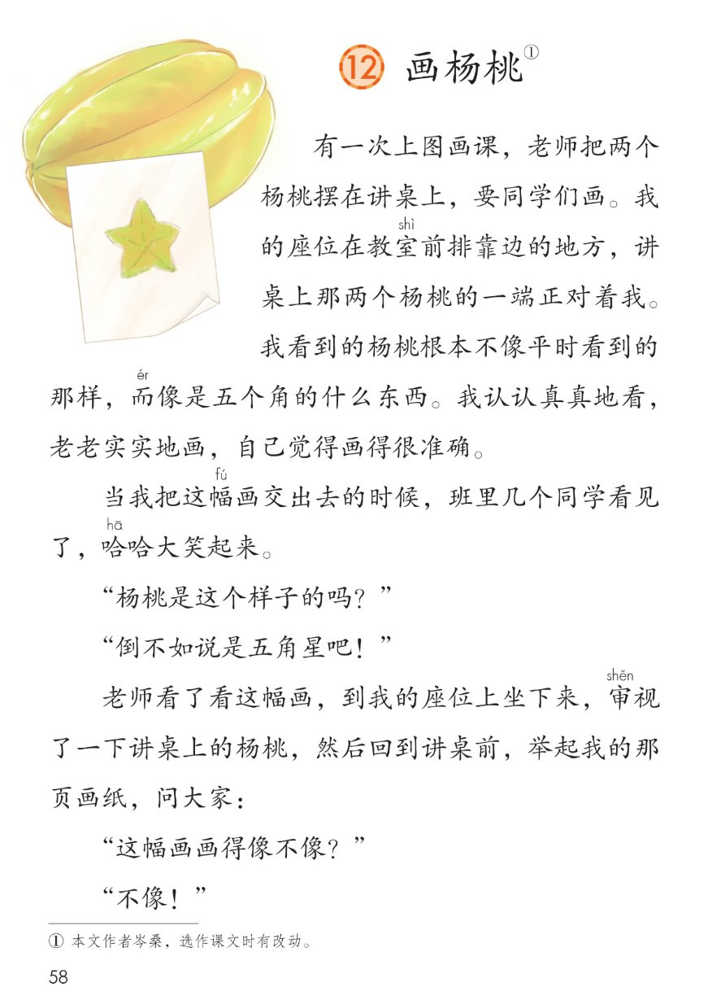
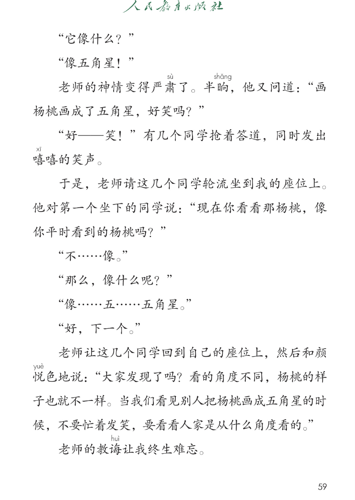
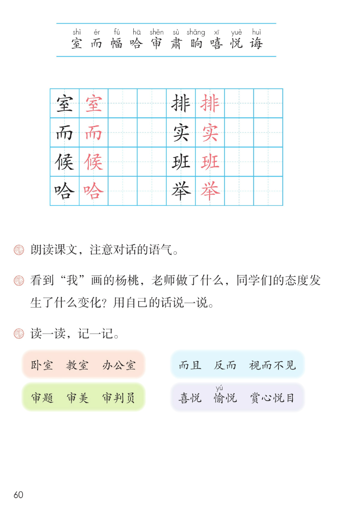

×
🔊 手机听不到声音怎么办？
① 先把手机
媒体音量调大 ，确认没开静音、没连蓝牙耳机；在微信里打开的，点右上角「⋯ → 用浏览器打开」。
② 还是没声音？到应用商店免费下载
Microsoft Edge 浏览器 （它自带朗读发声），用它打开本页面就能出声。
③ 换了 Edge 仍然没声音，说明这部手机的
硬件/系统不支持 网页朗读（多为老旧机型）；近几年买的新手机一般都能正常播放。
→ 打开声音自检
⭐ 第 12 课《画杨桃》· 有声图文带读
统编版语文 · 第五单元·阅读 · 课本 第 58~60 页 · 本文作者岑桑
课文 18 段 · 共 23 句
会认字 10
会写字 8
听写词 10
近义词 4 组
深入理解 8 题
本课本领 朗读对话·看清角度
🎧 五步学（可随时点任意一句、一个字、一个词单独听）： ① 听读课文 ——对话课文，一句一句读，读到哪一句哪一句发光；开「跟读」后读完一句留时间让你自己读。② 学字词 ——10 个会认字、8 个会写字（含书写提示），点一个读一个。③ 词语·听写·造句 ——先读读记记，再听写 10 个词（读两遍→你写→报答案→听示范句），最后听 4 组近义词辨析。④ 深入理解 ——8 道题（认知 / 理解 / 运用 / 拓展），开放题答案不唯一，先想后看。⑤ 分节朗读·想象画面 ——按五步想象课文里的画面，再听十八位朗读者分段读，特别注意对话的语气。
📚 第五单元·阅读（单元进度）： 第11课《寓言二则》 → 第12课《画杨桃》 → （后续课文待发图）
点段前的 ①~⑱ 听整段；对话的语气见朗读要求③
🔁 跟读模式：关
👁 隐藏注音（自测用）
注音只标本课要认、要写的字，读音来自课本第 60 页生字表
🎤 朗读要求（老师标准） 室 读第四声，而 读第二声，幅 读第二声，哈 读第一声，审 读第三声，肃 读第三声，晌 读第三声，嘻 读第一声，悦 读第四声，诲 读第四声；不添字、不漏字 ：逗号停得短，句号停得长；注意对话的语气（课后题①） ：讥笑的话（"倒不如说是五角星吧！""好——笑！"）读得快、得意；老师的话读得沉稳、亲切；同学承认错误的话（"不……像。""像……五……五角星。"）读得迟疑、声音小；边读边想 ：同学们的态度为什么变了。
①
有一次上图画课，老师把两个杨桃摆在讲桌上，要同学们画。
我的座位在教室shì 前排pái 靠边的地方，讲桌上那两个杨桃的一端正对着我。
我看到的杨桃根本不像平时看到的那样，而ér 像是五个角的什么东西。
我认认真真地看，老老实shí 实shí 地画，自己觉得画得很准确。
②
当我把这幅fú 画交出去的时候hòu ，班bān 里几个同学看见了，哈hā 哈hā 大笑起来。
③
"杨桃是这个样子的吗？"
④
"倒不如说是五角星吧！"
⑤
老师看了看这幅fú 画，到我的座位上坐下来，审shěn 视了一下讲桌上的杨桃，然后回到讲桌前，举jǔ 起我的那页画纸，问大家：
⑥
"这幅fú 画得像不像？"
⑦
"不像！"
⑧
"它像什么？"
⑨
"像五角星！"
⑩
老师的神情变得严肃sù 了。
半晌shǎng ，他又问道："画杨桃画成了五角星，好笑吗？"
⑪
"好——笑！"有几个同学抢着答道，同时发出嘻xī 嘻xī 的笑声。
⑫
于是，老师请这几个同学轮流坐到我的座位上。
他对第一个坐下的同学说："现在你看看那杨桃，像你平时看到的杨桃吗？"
⑬
"不……像。"
⑭
"那么，像什么呢？"
⑮
"像……五……五角星。"
⑯
"好，下一个。"
⑰
老师让这几个同学回到自己的座位上，然后和颜悦yuè 色地说："大家发现了吗？看的角度不同，杨桃的样子也就不一样。当我们看见别人把杨桃画成五角星的时候hòu ，不要忙着发笑，要看看人家是从什么角度看的。"
⑱
老师的教诲huì 让我终生难忘。
🤔 想一想（点我可跳过）
点一张图，听读整页

第 58 页 · 画杨桃课文前半

第 59 页 · 画杨桃课文后半与道理

第 60 页 · 会认会写字与课后题
📖 人教版《语文》二年级下册 · 课本第 58~60 页 · 图片仅供个人学习，版权归人民教育出版社所有
点一个字，听读音、词语和课文里的句子
结构、部首、笔画与书写提示为通用规范，供参考，以教材和老师的指导为准
室
shì
教室 · 办公室
9 画 · 上下（宀）
宝盖写宽，至字底稳
排
pái
前排 · 排队
11 画 · 左右（扌）
提手写窄，非字两竖对齐
而
ér
而且 · 反而
6 画 · 独体（而）
横长撇短，竖撇收住
实
shí
老实 · 诚实
8 画 · 上下（宀）
宝盖写宽，下面写稳
候
hòu
时候 · 等候
10 画 · 左右（亻）
中间小竖别丢
班
bān
班里 · 班级
10 画 · 左右（王）
点在中间，竖撇分清
哈
hā
哈哈大笑 · 哈哈
9 画 · 左右（口）
口旁写小，合字要稳
举
jǔ
举起 · 举手
9 画 · 上下（举）
点横写开，长横托住手
点气泡，听课后题原文
📖 课后题（课本第 60 页照录） ：① 朗读课文，注意对话的语气。 ② 看到"我"画的杨桃，老师做了什么，同学们的态度发生了什么变化？用自己的话说一说。 ③ 读一读，记一记。
室 卧室 教室 办公室
而 而且 反而 视而不见
审 审题 审美 审判员
悦 喜悦 愉悦 赏心悦目
读两遍 → 你在纸上写 → 报答案 → 听示范句
准备听写 · 共 10 个词
○ ○ ○
点下面的「开始听写」，听到一个词就写一个词。
▶ 开始听写
🔁 再读一遍
👁 看答案
点词听读，点句子听示范句，再自己说一句
1 教室 会写字 · 室
示范句：我的座位在教室前排靠边的地方。
✏️ 我也能说：教室里有什么
2 排队 会写字 · 排
示范句：放学了，我们排队走出校门。
✏️ 我也能说：谁 + 排队做什么
3 而且 会写字 · 而
示范句：他字写得好，而且写得快。
✏️ 我也能说：谁会什么，而且会什么
4 老实 会写字 · 实
示范句：我老老实实地画自己看到的杨桃。
✏️ 我也能说：谁 + 老老实实做什么
5 时候 会写字 · 候
示范句：当我把画交出去的时候，同学们哈哈大笑。
✏️ 我也能说：什么时候 + 做什么
6 班级 会写字 · 班
示范句：我们的班级像一个大家庭。
✏️ 我也能说：班级 + 怎么样
7 哈哈大笑 会写字 · 哈
示范句：同学们看见这幅画，哈哈大笑起来。
✏️ 我也能说：谁 + 哈哈大笑
8 举手 会写字 · 举
示范句：老师举起我的那页画纸问大家。
✏️ 我也能说：谁 + 举手做什么
9 审视 会认字 · 审
示范句：老师审视了一下讲桌上的杨桃。
✏️ 我也能说：谁 + 审视什么
10 和颜悦色 会认字 · 悦
示范句：老师和颜悦色地给我们讲道理。
✏️ 我也能说：谁 + 和颜悦色地说
相同点 / 不一样在哪 / 各造一句
严肃 — 严厉
相同：都表示不随便、认真 。
不一样：严肃 多指神情 ，课文写老师的神情变得严肃了；严厉 多指态度和口气 ，程度更深。
严肃：老师的神情变得严肃了。
教诲 — 教导
相同：都表示教育、指点 。
不一样：教诲 更书面、更郑重，课文写老师的教诲让我终生难忘；教导 更常用。
教诲：老师的教诲让我终生难忘。
准确 — 精确
相同：都表示没有差错 。
不一样：准确 多指做法、说法对，课文写自己觉得画得很准确；精确 多指数字、测量很细很严。
准确：自己觉得画得很准确。
和颜悦色 — 和蔼可亲
相同：都表示态度温和、让人愿意亲近 。
不一样：和颜悦色 强调脸色平和 ，课文写老师和颜悦色地说；和蔼可亲 多形容长辈让人愿意亲近 。
和颜悦色：老师和颜悦色地说。
AABB 式叠词 认认真真 老老实实
描写神情的词 神情严肃 和颜悦色
提醒别人的说法 不要忙着发笑，要看看人家是从什么角度看的
一字组多词 室：教室、办公室 悦：喜悦、赏心悦目
标「答案不唯一」的题，说得有道理都对
认知 看到"我"画的杨桃，同学们是什么态度？看解析
🤔 想一想
解析：
哈哈大笑、抢着说好笑
没有从我的角度看
觉得很好笑
认知 老师看到"我"的画后做了什么？看解析
🤔 想一想
解析：
看了看这幅画
坐到我的座位上审视
请同学轮流来看
理解 同学们的态度发生了什么变化？看解析
🤔 想一想
解析：
讥笑、觉得好笑
坐到我的座位亲眼看
承认像五角星
理解 老师的话告诉我们什么道理？看解析
🤔 想一想
解析：
角度不同样子不同
不要忙着发笑
先看人家怎么看
理解 同学们前后说的话有什么不同？看解析
🤔 想一想
解析：
讥笑、得意
断断续续承认
语气写出态度变化
运用 朗读对话时该注意什么语气？试着读一读"不像！""像五角星！""像……五……五角星。"。看解析
🤔 想一想
解析：
讥笑的话快而得意
承认的话迟疑、小声
🌈 答案不唯一
运用 生活中你有没有过从不同角度看东西的经历？说一说。看解析
🤔 想一想
解析：
角度不同看到的不同
两个角度各看到什么
🌈 答案不唯一
拓展 你想对文中讥笑"我"的同学、或对老师说什么？看解析
🤔 想一想
点一步，听这一步
1
前排看杨桃
3
老师审视
💬 想象支架：先 想前排看到的五角星 → 再 想同学们哄笑 → 接着 想老师审视换位 → 然后 想同学们认错 → 最后 想老师的话，说说道理。
点一张卡，听这一段的句子；对话注意语气
🌈 第1段·朗读者
第1段：有一次上图画课，老师把两个杨桃摆在讲桌上，要同学们画。
💬 叙述画画经过，读得平静清楚
🌈 第2段·朗读者
第2段：当我把这幅画交出去的时候，班里几个同学看见了，哈哈大笑起来。
💬 同学们大笑，读得响亮
🌈 第3段·朗读者
第3段：杨桃是这个样子的吗？
💬 同学发问，读得得意
🌈 第4段·朗读者
第4段：倒不如说是五角星吧！
💬 同学抢答，读得更得意
🌈 第5段·朗读者
第5段：老师看了看这幅画，到我的座位上坐下来，审视了一下讲桌上的杨桃，然后回到讲桌前，举起我的那页画纸，问大家：
💬 老师细看细做，读得平静
🌈 第6段·朗读者
第6段：这幅画得像不像？
💬 老师问大家，读得认真
🌈 第7段·朗读者
第7段：不像！
💬 同学齐答不像，读得快而齐
🌈 第8段·朗读者
第8段：它像什么？
💬 老师追问，读得沉稳
🌈 第9段·朗读者
第9段：像五角星！
💬 同学答像五角星，读得肯定
🌈 第10段·朗读者
第10段：老师的神情变得严肃了。
💬 老师神情严肃，读得郑重
🌈 第11段·朗读者
第11段：好笑！有几个同学抢着答道，同时发出嘻嘻的笑声。
💬 抢着说好笑，读得拖长音
🌈 第12段·朗读者
第12段：于是，老师请这几个同学轮流坐到我的座位上。
💬 老师请大家换座位，读得平和
🌈 第13段·朗读者
第13段：不像。
💬 同学迟疑地答，读得犹豫小声
🌈 第14段·朗读者
第14段：那么，像什么呢？
💬 老师温和追问，读得耐心
🌈 第15段·朗读者
第15段：像，五，五角星。
💬 同学结结巴巴，读得慌张
🌈 第16段·朗读者
第16段：好，下一个。
💬 老师说好下一个，读得简短
🌈 第17段·朗读者
第17段：老师让这几个同学回到自己的座位上，然后和颜悦色地说：大家发现了吗？看的角度不同，杨桃的样子也就不一样。当我们看见别人把杨桃画成五角星的时候，不要忙着发笑，要看看人家是从什么角度看的。
💬 老师和颜悦色讲道理，读得亲切
🌈 第18段·朗读者
第18段：老师的教诲让我终生难忘。
💬 结尾感悟，读得深、慢